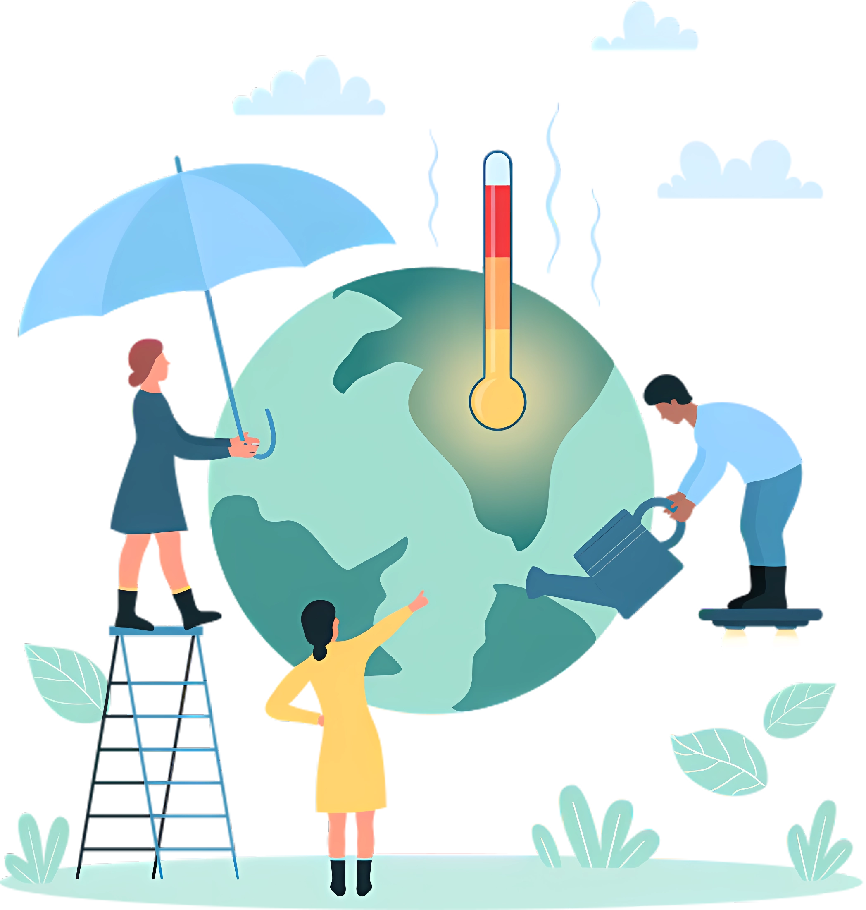
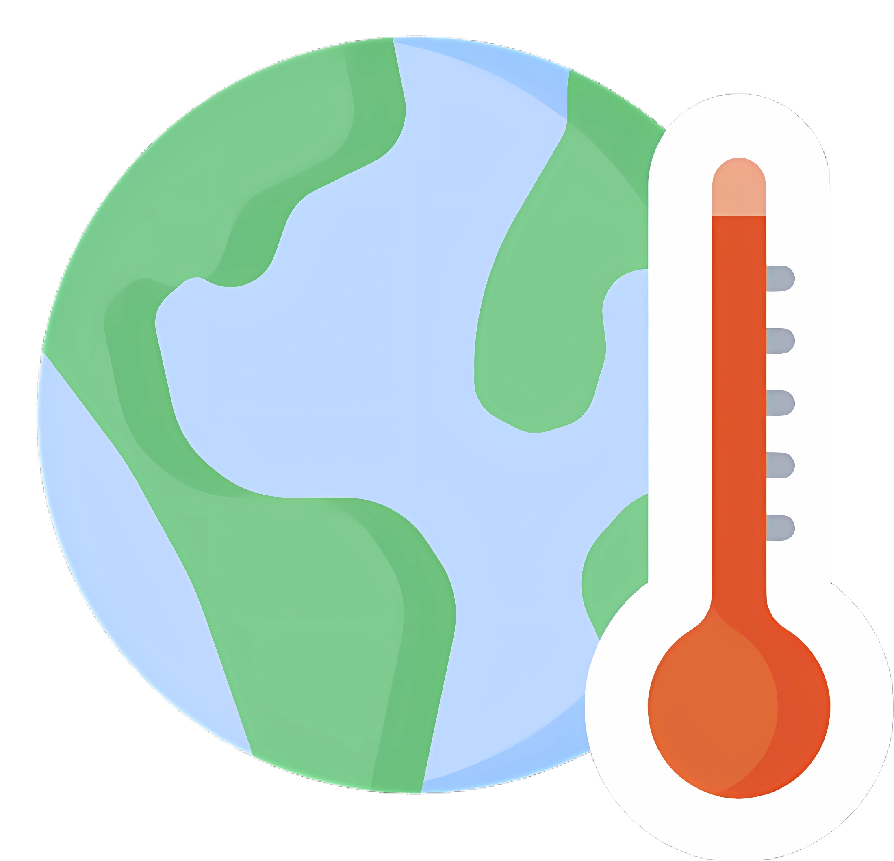
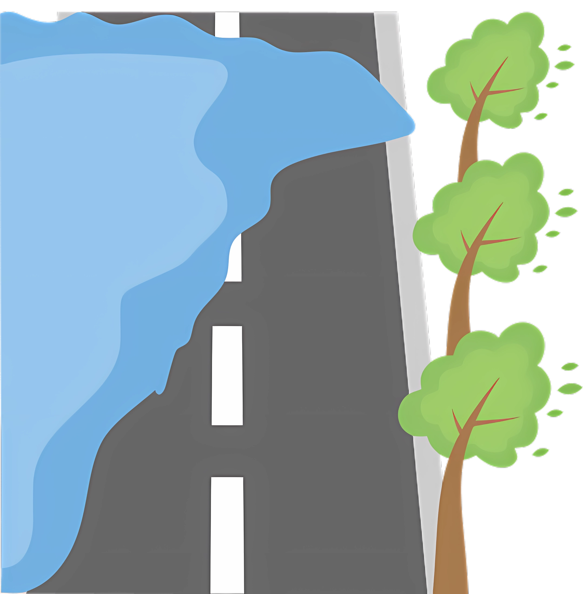
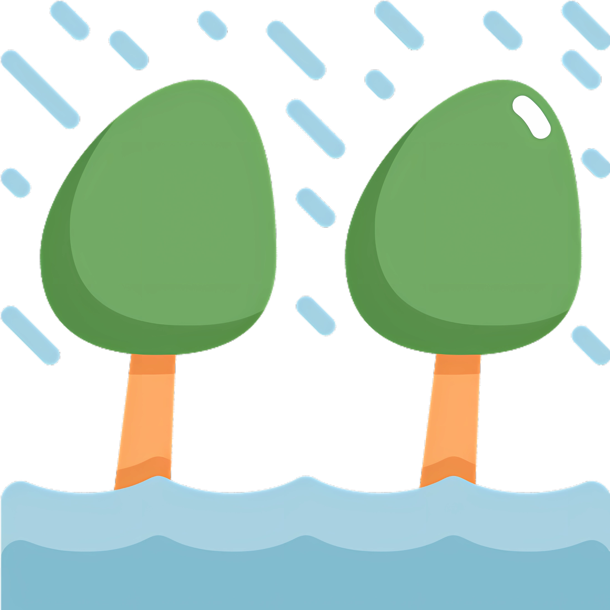
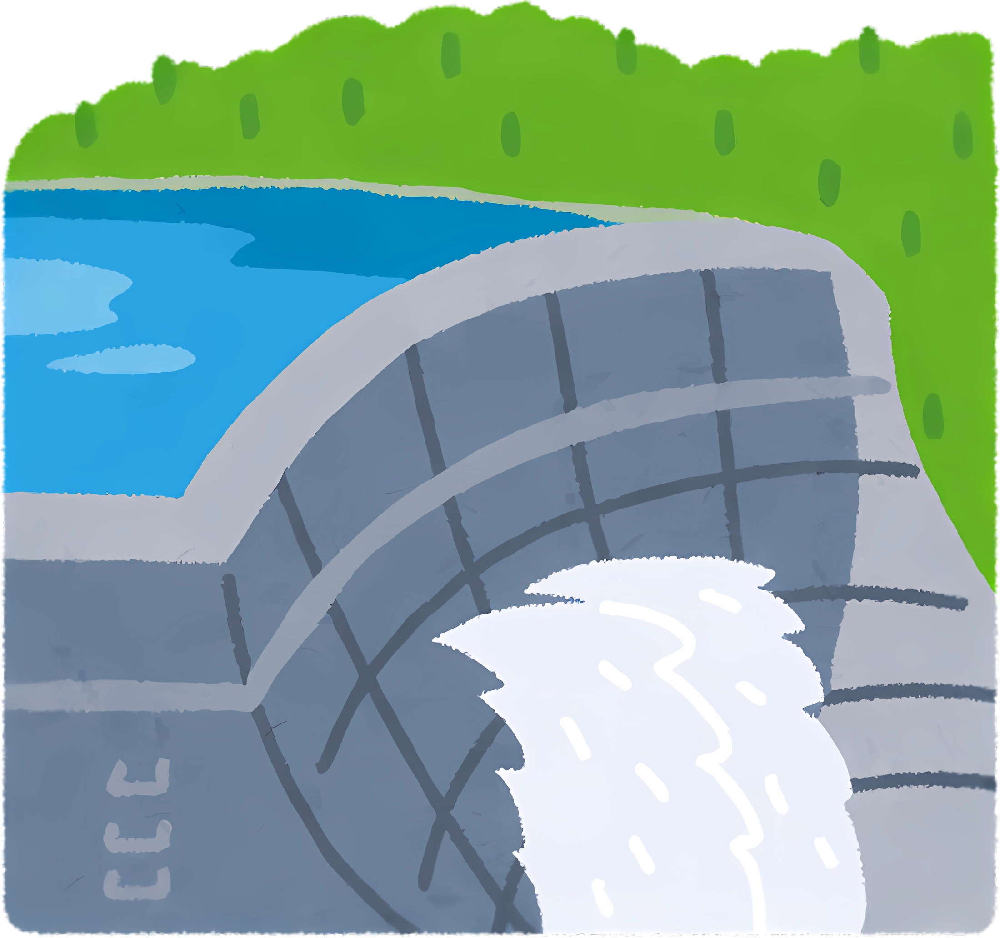
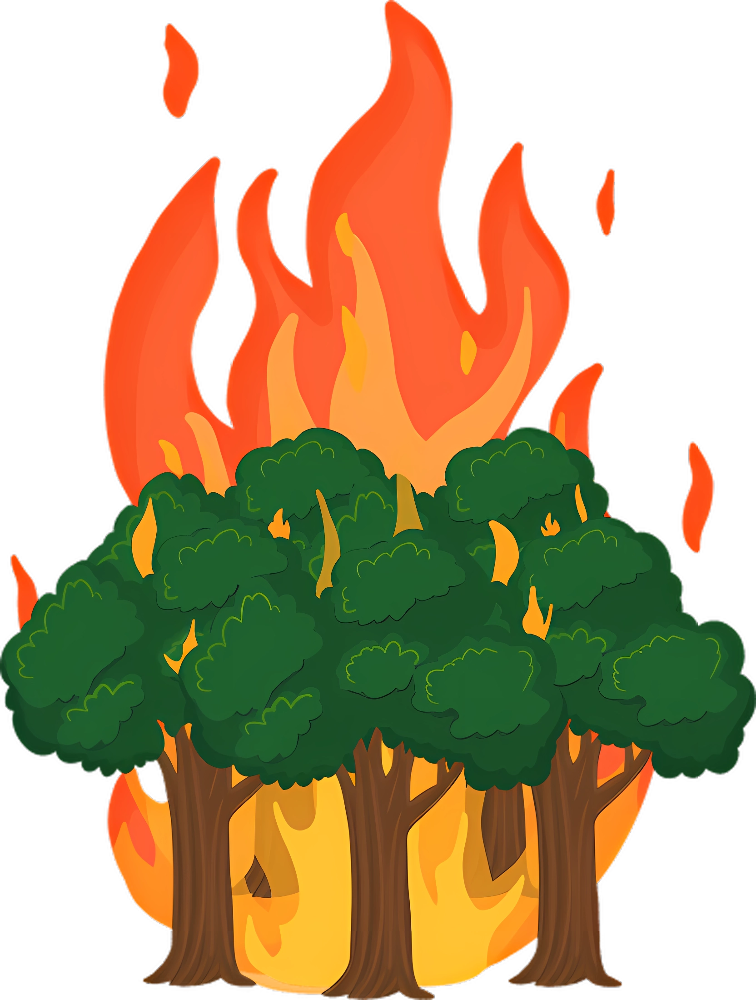
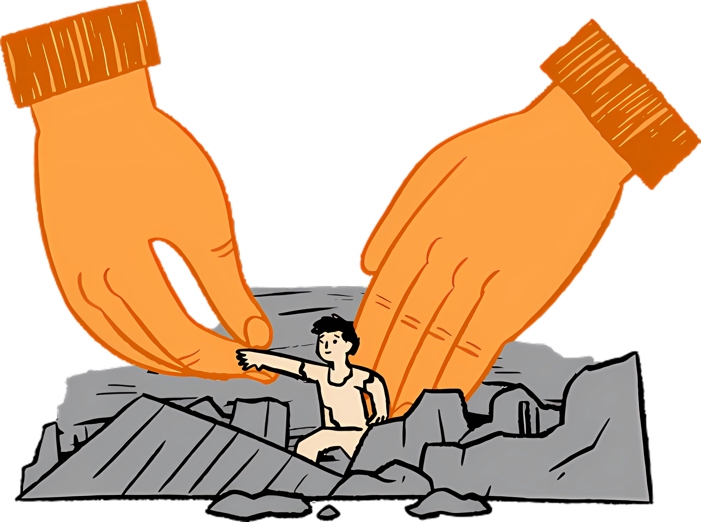
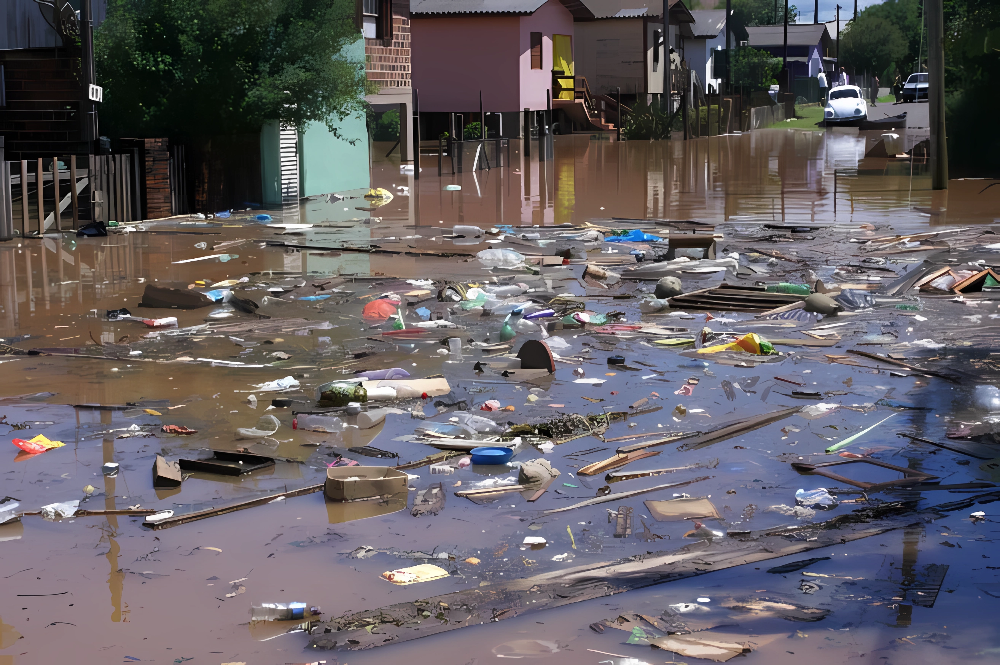

Sobre
A SEN.AI desenvolveu um aplicativo para Smonitorar catástrofes ambientais e analisar o clima em todo o Brasil, em parceria com órgãos federais, o INPE e o setor privado. Este projeto visa melhorar a prevenção de desastres e a Sugestão de riscos ambientais em diversas regiões do país.

Realizar previsão do tempo

Detectar enchentes

Detectar inundações

Detectar rompimentos de barragens

Detectar queimadas em reservas
Emitir alertas

Detectar e ajudar nos resgates
Segundos que Salvam Vidas
O Brasil registrou o maior número de desastres naturais em 2023, segundo dados apresentados pelo Centro Nacional de Monitoramento e Alertas de Desastres Naturais (Cemaden). Foram registrados 1.161 eventos de desastres, sendo 716 associados a eventos hidrológicos, como transbordamento de rios, e 445 de origem geológica, como deslizamentos de terra. Na média, foram registrados pelo menos três desastres por dia. O número supera os registros de 2022 e 2020.
Informe-se mais

Perguntas Frequentes
Como o SEN-Eye detecta desastres naturais?
O SEN-Eye utiliza imagens de satélite avançadas e algoritmos de machine
learning para monitorar constantemente sinais de possíveis desastres naturais como enchentes,
inundações, rompimentos de barragens e queimadas. O aplicativo analisa padrões meteorológicos e
alterações no terreno para detectar ameaças em tempo real e emitir alertas precisos.
O aplicativo funciona offline?
Funcionalidades offline são limitadas. A conexão à internet é necessária
para atualizações e alertas em tempo real.
Quais tipos de alertas o SEN-Eye pode emitir?
Emitimos alertas para enchentes, inundações, rompimentos de barragem,
queimadas e condições climáticas extremas.
O SEN-Eye está disponível em quais plataformas?
Disponível para Android e iOS.

Baixe nosso aplicativo agora mesmo!!